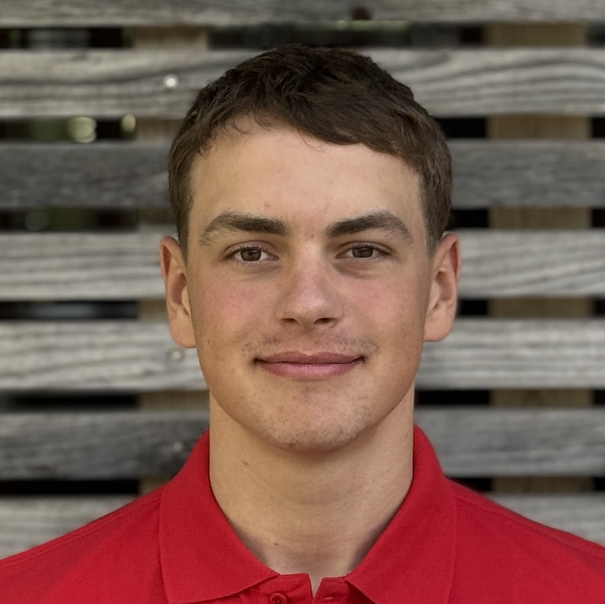

Vize-Europameister
Doppelvierer

Porträt / Swiss Rowing ↗01 / ÜBER MICH
Rudern.
Seit 2018.
Ich bin Moritz, 19 Jahre alt und Wettkampfruderer beim Basler Ruder-Club. Seit 2018 gehört das Rudern zu meinem Leben.
Mein sportlicher Weg führt von nationalen Regatten bis zu internationalen Meisterschaften. 2023 wurde ich ins Schweizer U19-Nationalkader aufgenommen; 2026 nahm ich an den U23-Weltmeisterschaften teil.
- Heimat
- Basel
- Verein
- Basler Ruder-Club
- Beginn
- 2018
02 / SPORTLICHER WEG
Ergebnisse.
Regatten und Meisterschaften · 2021–2026
3. Rang
Doppelvierer
SM-Medaillen
3 Gold · 5 Silber · 6 Bronze
Alle Ergebnisse
2021 — 20262026
- U23-WeltmeisterschaftenVierer ohne Steuermann12. Rang
- Ghent May RegattaMänner-Zweier ohne Steuermann für den SRV1. und 2. Rang
- Schweizer Meisterschaften EliteVierer ohne Steuermann3. Rang
- Schweizer Meisterschaften EliteMixed-Achter3. Rang
- Schweizer Meisterschaften EliteDoppelvierer5. Rang
- U23-EuropameisterschaftenDoppelviererkrankheitsbedingter Nichtstart (DNS)
2025
- U19-EuropameisterschaftenDoppelvierer2. Rang und Vize-Europameister
- U19-WeltmeisterschaftenDoppelvierer3. Rang und Bronzemedaille
- Schweizer Meisterschaften U19Vierer ohne SteuermannSchweizermeister
- Schweizer Meisterschaften U19Doppelzweier2. Rang
- Schweizer Meisterschaften EliteAchter3. Rang
2024
- U19-EuropameisterschaftenDoppelvierer3. Rang und Bronzemedaille
- U19-WeltmeisterschaftenDoppelviererSieg im B-Finale
- Schweizer Meisterschaften U19AchterSchweizermeister
- Schweizer Meisterschaften EliteAchterSchweizermeister
- Schweizer Meisterschaften U19Doppelvierer3. Rang
- Solothurner 8er RennenStreckenrekord
- Basel HeadJunioren-AchterSieg in Sprint und Classic, jeweils mit Rekordzeit
2023
- Schweizer Meisterschaften U17Skiff2. Rang
- Schweizer Meisterschaften U19Vierer ohne Steuermann2. Rang
2022
- Swiss Rowing Indoors U171. Rang
- Langstreckentest U17 FUTURO2. Rang
- Schweizer Meisterschaften U19Vierer ohne Steuermann2. Rang
- Schweizer Meisterschaften U17Doppelzweier4. Rang
2021
- Swiss Rowing Indoors U152. Rang
- Schweizer Meisterschaften U15Skiff3. Rang
- Schweizer Meisterschaften U17Achter3. Rang
- Schweizer Meisterschaften U19Achter2. Rang
Ergebnisstand: November 2026. Grundlage sind die Angaben aus meinem Sportlebenslauf. DNS bedeutet Nichtstart und ist kein Platzierungsergebnis.
03 / EINBLICKE
Fotos.
Wettkampf und Mannschaft.
04 / KONTAKT
Kontakt.
Für sportlichen Austausch, Medien- und Sponsoringanfragen.
moritz.l.petry@gmail.com ↗Datenschutz & Besucherstatistik
Diese Webseite wird über GitHub Pages bereitgestellt. GitHub verarbeitet beim Aufruf unter anderem die IP-Adresse für Sicherheitszwecke. Weitere Informationen enthält die GitHub-Datenschutzerklärung.
Für eine statistische Auswertung der Seitenaufrufe verwende ich GoatCounter. Dabei werden unter anderem die aufgerufene Seite, der Zeitpunkt, Browser- und Geräteinformationen sowie eine ungefähre geografische Zuordnung verarbeitet. GoatCounter verwendet dafür keine Cookies. Details findest du in der Datenschutzerklärung von GoatCounter. Browser oder Werbeblocker können die Erfassung verhindern; die Statistik ist daher keine vollständige Zählung aller Aufrufe.
Bei Kontakt per E-Mail werden die von dir übermittelten Angaben zur Bearbeitung deiner Anfrage verarbeitet. Kontakt: moritz.l.petry@gmail.com.